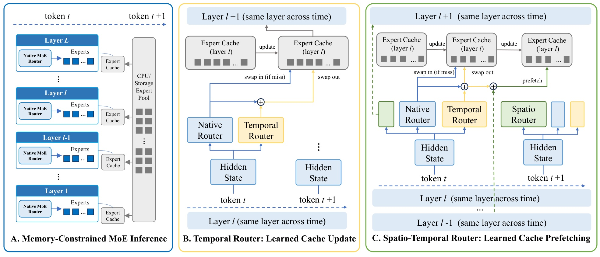
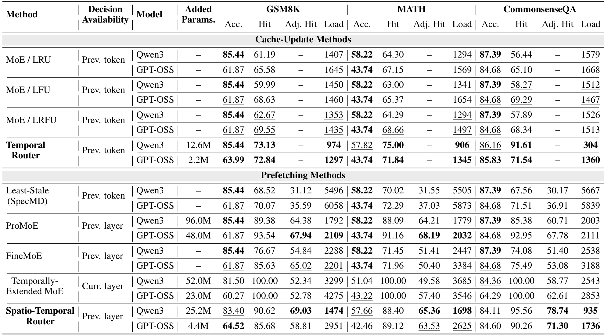
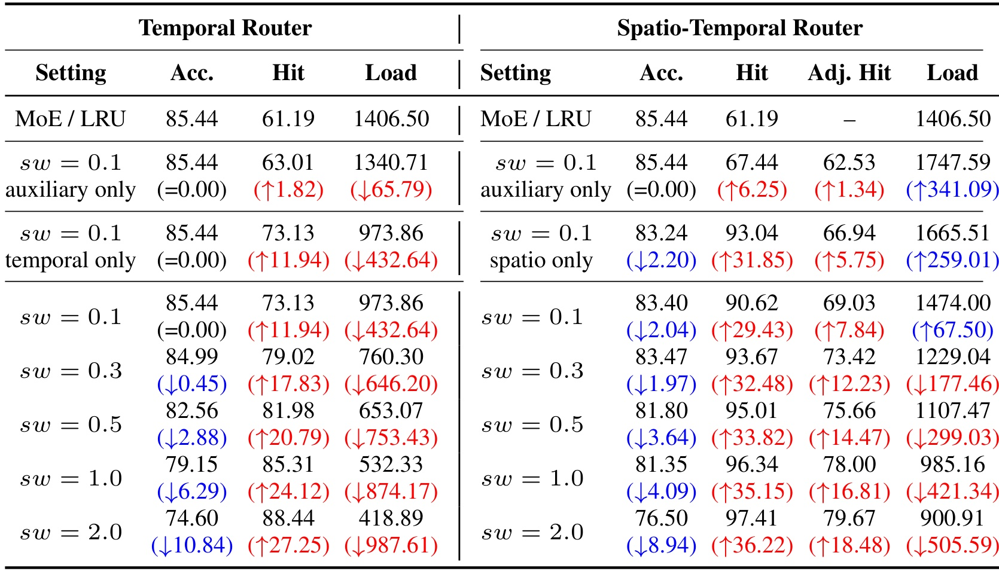
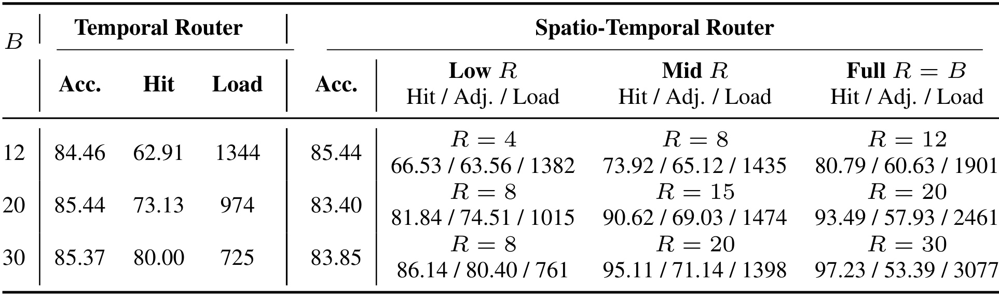
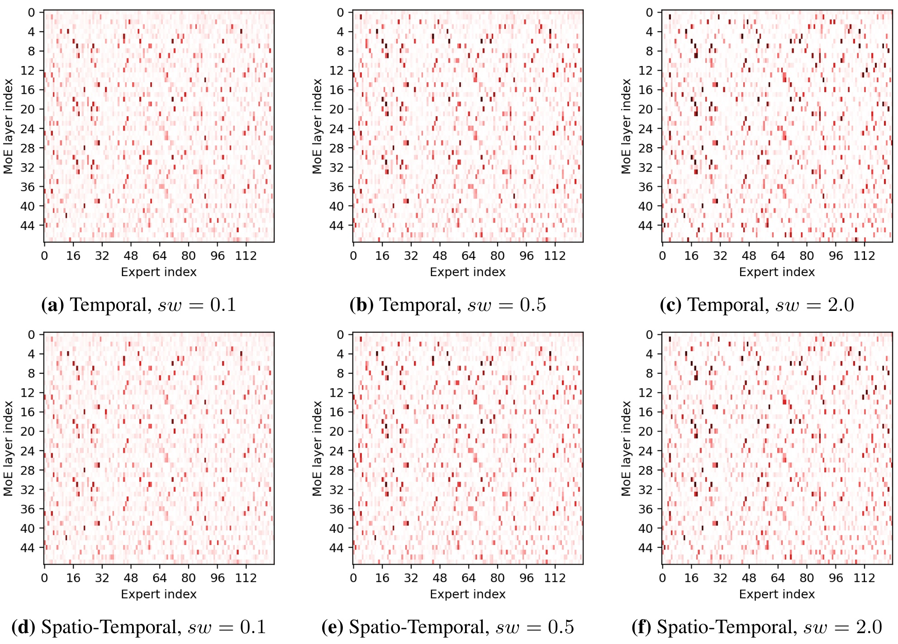
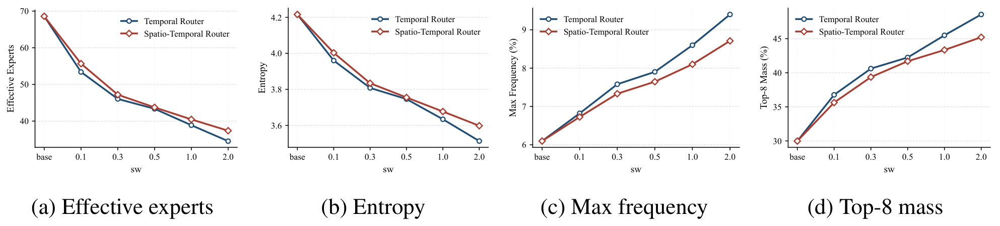

华为 CacheRouter：让 MoE 后训练同时学习专家缓存
论文 Cache-Aware Joint Router Adaptation for Memory-Efficient MoE Inference 由华为等机构完成，第一作者 Zhenhe Wu 同时署名华为和北京航空航天大学，Yaping Jin 为共同一作，合作机构包括天津大学、悉尼大学、北京信息科技大学。首版提交于 2026 年 9 月 4 日，本文按首版全文解读；论文入口。已检查摘要页与 PDF 链接，本轮未核验到本文独立公开代码或项目页。
这篇论文研究显存受限的 MoE 自回归推理，让主模型和轻量缓存路由器共同学习哪些专家值得留在显存中。它把每次专家访问之后的保留决策，与下一次访问之前需要支付额外搬运成本的预取决策分开，考察缓存覆盖、权重传输和任务质量之间的关系。
MoE 每个 token 只激活少量专家，但完整专家集合仍可能超过 GPU 显存，解码时不得不反复搬运权重。启发式缓存难以直接学习哪些驻留专家对后续 token 有用，已有时空预取又主要在运行时预测和调度层处理局部性。
1. 背景和问题
1.1 稀疏计算与权重驻留是两本账
MoE 的节省来自每个 token 只计算一部分专家，而不是彻底删除没有选中的专家。当模型一层拥有一百多个专家、当前 token 只激活八个时，计算量可以接近小模型，全部专家权重却仍需保存在某个存储层级。若显存只能驻留其中二十个专家，连续 token 即使每次都算八个，也可能不断换入不同专家。一次选择在数学上只是路由分数的 Top-K，在设备上却可能触发主机到加速器的权重搬运。这篇论文针对的正是两者之间的落差：模型质量优化关注应该选谁，缓存管理关注被选的人是否已经在场，两种目标通常没有共同训练。
传统 LRU、LFU 和 LRFU 使用最近访问、累计频率或两者的折中来决定淘汰对象。它们的优点是不需要改模型、容易解释、适用于既定访问序列；困难在于语言模型隐藏状态中可能已经包含下一步需求线索，而这些线索不一定体现为最近使用过谁。预测式方案如 ProMoE 会提前估计后续专家，利用计算与传输重叠减少等待。此时评价又出现另一层问题：只要提前加载足够多的专家，访问时命中就能很高，但搬运总量也可能随之增加。因此，预测准确度、预取覆盖率和真实传输开销必须分别讨论，不能互相替代。
原文把已有系统路线进一步分为资源管理、专家缓存和时空预测。资源管理一侧，FlexGen通过张量放置、卸载和批处理减轻内存压力，vLLM的PagedAttention关注键值缓存管理；DeepSpeed-MoE和Tutel则主要优化并行执行。它们说明模型能够高效运行还依赖底层执行设施，但并没有替本文回答某个驻留专家在后续解码中是否值得保留。MoE-Infinity使用激活相关缓存和请求级轨迹，FineMoE利用细粒度访问模式与提示级信息，说明专家缓存可以从比最近一次访问更丰富的信号获益。这些路线与训练期学习缓存优先级之间存在互补关系，不能只按是否使用神经预测器划成优劣两组。
距离本文更近的是STEP与ST-MoE。前者提出自适应时空专家预取，后者结合跨层及连续token相关性、表式预测和可重构硬件。它们把局部性预测放入运行时或硬件管线，最终延迟也受到这些设施影响；本文则将缓存兼容性写进后训练目标，刻意不指定传输调度器。因而作者只做设计层面的定性对照，没有把这些系统论文的延迟直接拿来和自己的模拟字节数排序。这个范围选择使算法机制更容易单独讨论，也留下一个明确的实验缺口：模型侧学到的驻留优先级接入成熟卸载系统后，能否继续改善真实服务表现。
本文把这一问题前移到模型后训练阶段。它给原模型增加负责缓存优先级的轻量线性路由器，并用语言建模损失和缓存覆盖损失共同更新模型。这样得到的访问序列也会改变，不再是对完全相同路由轨迹施加不同缓存策略。作者明确承认，主表比较的是完整推理配置：匹配的纯语言模型后训练基线、不同缓存机制及其允许的模型适配共同构成结果。这个限定非常重要，因为如果把论文概括为“替换一个缓存算法，其他条件完全不变”，就会把联合训练产生的模型行为变化误归因于缓存控制器本身。
1.2 两个决策时刻决定可做什么
缓存有访问前与访问后两个天然决策点。访问后，当前选中但原先缺失的专家已经为了计算而被加载，策略可以决定下一步继续保留谁。这种操作不会让刚刚发生的访问变成命中，也不必额外预取专家。访问前，如果前一层或前一 token 的信息已经可用，策略可以主动替换驻留集合，提高目标层到来时的覆盖率。主动加载可能让专家更早可用，但每次插入都消耗带宽；一次错误预取还可能赶走马上需要的专家，继而引起新的按需加载。论文将两种时刻拆开，形成可独立部署的 Temporal Router 和可叠加的 Spatio Router。
Temporal Router 预测的是同一层下一 token 的需求；Spatio Router 预测的是因果执行顺序中的下一个 MoE 位置。这两个“下一步”不能混用。对于一个 token 的中间层，空间前驱就是同一 token 的前一 MoE 层；对第一层，前驱则绕回上一个 token 的最后一层。这个定义让推理只依赖已经完成的计算，避免把训练阶段可见的未来目标分布误当成推理输入。论文最终希望在保持任务准确率可接受的条件下，改善驻留和传输行为，而没有承诺在任何运行时、任何硬件上自动获得相同速度收益。
从研究定位看，本文没有交付完整服务栈，也没有给出带调度器的实测吞吐曲线。它使用与解码路由同步的轨迹驱动模拟器，把每次按需缺失和每次主动插入都计为完整专家传输。prefill 形成的缓存会初始化 decoding，但 prefill 本身的流量不计入报告。于是结论严格属于解码阶段的算法传输需求；短请求中 prefill 占比可能很高，生产环境的批处理、链路带宽、传输与计算重叠又可能改变收益大小。带着这些口径读后续结果，才能分清文章实际验证了什么，以及哪些仍要在真实部署里测量。
还有一个容易忽略的区别是，专家出现频率高不代表它一定马上会再被调用。语言建模中的主题连续性可能带来重用，某些推理步骤的状态变化又可能让需求突然切换。仅按频率保留和利用当前隐藏状态预测，捕捉的是不同信息。论文没有给出一种可以保证任何访问序列最优的替换规律，而是让模型在训练任务上学习与有限驻留集合更兼容的行为。学习到的习惯如果遇到新的领域、不同输出长度或不同批处理方式，缓存表现需要重新检验。
因此这项工作的科学问题既包含预测，又包含适配：辅助模块能否提前判断需求，主模型是否愿意在维持语言质量的同时形成更容易缓存的选择，两者共同决定结果。只有把冻结主干的对照、联合训练和纯语言模型训练放在一起，才能看清新模块究竟承担多少工作。这也是后文不能只摘取主表最高命中数字、必须继续读消融和权重扫描的原因。
2. 方法
2.1 统一缓存生命周期与软覆盖目标
原文先定义原生路由，再定义缓存。每层的辅助模块只输出驻留优先级，实际执行哪些专家仍由原生路由的 Top-K 决定：
符号解释：$t$ 是解码步，$l$ 是 MoE 层，$h$ 是当前隐藏状态，$W^R$ 是原生路由矩阵，$p^R$ 是该层所有专家上的分布，$S$ 是本次执行集合，$C$ 是驻留缓存，$B$ 是容量，$K$ 是激活专家数。保留 Top-K 规则不等于冻结路由参数；后训练改变 $W^R$ 和其他主干参数后，分布及最终选中集合都可以变化。因而“辅助路由器不越权执行”与“原模型行为完全不变”是两件不同的事。

Figure 1 的 A 面板先画出受限显存环境：每个 MoE 层拥有本层专家缓存，其余权重位于 CPU 或存储池。蓝色原生路由箭头通向实际专家，强调模型计算路径仍在原有结构里。B 面板把同一层相邻 token 并列，当前隐藏状态同时送入原生路由器和 Temporal Router，两路分数相加形成保留优先级。发生缺失后，已经为了本次计算而换入的专家进入缓存，低优先级驻留专家换出；沿着时间箭头，更新后的缓存留给下一个 token。这里没有一条从未来预测直接触发额外载入的预取路径，所以仅使用 B 模式可以降低总传输而不承担主动搬运。
C 面板在时间传递基础上增加绿色 Spatio 路径，前驱层隐藏状态生成目标层的专家需求预测，并在目标访问前参与缓存细化。图中两个加号不能理解为两个路由器共同选出执行专家：访问前的组合用于预取和替换，访问后的组合用于保留，真正参与 MoE 计算的仍是蓝色原生路由输出。图中绿色竖向信息流与横向 token 时间流共同解释了“时空”的含义，也暴露了成本差异：主动预取的专家即使之后没有被使用，传输费用仍已经发生。该图支持算法时序和模块职责，并不能提供传输与计算实际重叠多少的证据；后续必须用流量统计衡量预取的代价。
硬 Top-B 成员关系不可直接平滑优化，作者用第 B 大优先级作为阈值，构造软成员代理及覆盖损失：
符号解释：$s$ 是全部 $N$ 个专家的优先级向量，$s_e$ 是专家 $e$ 的分数，$\theta_B$ 是第 B 大分数，$\tau$ 是温度，$\sigma$ 是 sigmoid，$m_e$ 是软驻留程度，$q_e$ 是目标需求概率。损失鼓励把高目标概率的专家排到阈值以上。完整分布保留 Top-K 边界附近的不确定性，提供比硬标签更稠密的训练信号；但这个代理只学习排序，不能凭空改变物理缓存。哪些专家真的允许进入，由下面的访问后更新和访问前细化算法严格限制。
2.2 Temporal Router 的访问后保留
Temporal Router 使用当前层隐藏状态估计同层下一 token 的专家需求，和原生路由分布等权相加：
符号解释：$W^T_l$ 是时间路由矩阵，$p^T$ 是预测分布，$s^T$ 是当前访问结束后的保留优先级。两项均在相同专家空间归一化，因此无需另加融合参数。$p^R$ 保留对当前需求的重视，$p^T$ 提供未来重用线索；这不是把两次 Top-K 求并集，也不是按照预测结果直接把尚未访问的专家搬进来。目标选择同层下一 token 的原生分布，平均有效位置后和语言建模损失联合优化：
符号解释：$\Omega_T$ 只包含存在下一 token 监督的位置，$L_{\mathrm{LM}}$ 为语言建模损失，$\lambda_T$ 控制缓存监督强度。训练时能用 teacher forcing 获得下一位置分布，推理时则依靠当前状态做预测。原文让目标原生分布保持可微，因此这个“目标”不是冻结教师；模型本身也会学出更易驻留的专家选择习惯。损失权重过大可能鼓励少数专家获得更多流量，牺牲模型表达和质量。
符号解释：$C^T$ 是跨 token 保留的缓存，$U_B$ 对应原文 Algorithm 1。算法先列出已选中但不驻留的专家，逐个把本次按需加载的专家纳入缓存；容量不足时，仅从当前缓存中未被 $S$ 选中的对象里淘汰最低分专家。$B\ge K$ 保证能保护当前选中集合。它没有对所有专家执行一次物理 Top-B 替换，因而不会为全局高分却本轮没使用的专家付额外传输费用。这个约束是 Temporal Router 能做到零主动加载的根本原因。
2.3 Spatio-Temporal Router 的因果访问前细化
完整模式给每个源层增加 Spatio Router，预测因果顺序中的下一个 MoE 位置。目标位置的可用前驱定义为：
符号解释：$p^S$ 是空间预测分布，$W^S$ 是空间路由矩阵，$L$ 是 MoE 层数，$\rho$ 返回目标层的因果前驱。后续层利用同 token 上一层，首层利用上一个 token 的末层。目标访问前还保存了上一 token 同层的原生和时间预测，将三者相加：
符号解释：$s^{ST}$ 是访问前组合优先级，前两项是时间沿用信息，第三项是最新因果前驱信息；$\Omega_{ST}$ 只包含这些输入均有效的位置，$\lambda_{ST}$ 是完整模式的缓存权重。由于预测发生在当前目标访问之前，监督目标是当前原生分布而不是下一 token 分布。完整模式只用这一个缓存目标联合训练 Temporal 与 Spatio，不额外叠加独立的时间损失，也不需要先训练一个 Temporal checkpoint 再拼接。
原文 Algorithm 2 在访问前按优先级降序检查 Top-R 候选，已在缓存中的候选无需操作；不驻留候选只有分数高于最低分驻留专家时才替换，每次插入均记为主动加载。随后原生路由正常选 Top-K，剩余缺失继续按需加载，层计算完成后再执行前述时间保留算子。$R$ 限制的是检查候选数量，不保证实际加载数量等于 $R$。训练代理关心全局优先级排序，推理候选阈值则可单独调整，所以同一个 checkpoint 能改变 $R$ 而无需重训；这为部署时调节覆盖率和带宽消耗留下了明确接口。
2.4 联合后训练与两种部署模式
主实验同时更新全部 backbone 和辅助路由参数，使用四个 epoch 的全参数后训练，并非 LoRA 或量化适配。时间路由器用同层原生矩阵初始化；空间路由器用其预测目标层的原生矩阵初始化，最后一层对应第一层完成环回。这减少了从随机优先级开始学习的负担。LM-only 对照使用相同数据、优化器和训练计划，仅移除缓存损失及辅助模块。冻结 backbone 的 auxiliary-only 是单独消融，不能拿它描述论文主方法的训练成本。
两种部署模式服务于不同目标：Temporal 只做访问后保留，优先减少额外搬运；完整模式愿意支付有限主动流量，提高专家访问前已经到位的概率。推理新增参数很小，只说明模型大小的边际增长有限，不能推出训练开销很小，也不能从参数百分比直接推算速度。由于本文没有把带宽、批量与异步调度写进目标函数，一个更高的缓存覆盖率只有经过实际服务栈验证，才可能转化为更低尾延迟。
3. 实验结果
3.1 数据、训练和指标的可比边界
论文覆盖 GSM8K 小学数学、MATH 竞赛数学和 CommonsenseQA 常识选择题。GSM8K 使用 7473 条训练和 1319 条测试题，MATH 使用 7500 条训练和 5000 条测试题；CommonsenseQA 有 9741 条训练、1221 条验证及1140条隐藏测试，由于测试标签不公开，报告的是验证准确率。模型分别是 Qwen3-30B-A3B-Instruct-2507 与 GPT-OSS-20B：前者约30.5B总参数、3.3B激活参数、48层、每层128专家且Top-8；后者约21B总参数、3.6B激活参数、24层、32专家且Top-4。两者缓存主设置分别是20和8，不能仅按同样百分比理解容量压力。
训练在8加速器节点进行，每张设备140 GB显存；作者没有在此给出可用于外推普通消费卡端到端时延的证据。优化器为 fused AdamW，采用余弦衰减、3% warmup、0.1权重衰减、梯度裁剪1.0，每设备batch为1并累积8步，使用bfloat16、TF32及梯度检查点。Qwen学习率为$10^{-5}$，GPT-OSS为$5\times10^{-6}$。训练完整split固定轮数，不按验证集挑checkpoint。主比较和适配消融对同一组五个固定seed各跑一次，表格为算术均值，没有展示可直接检验细微差异显著性的置信区间。
Qwen 的温度和缓存损失权重为0.03和0.1，GPT-OSS为0.05和0.01，提前固定并跨三个任务复用。完整模式的主候选预算分别是15和6，均为缓存容量的75%。评估使用贪心解码和KV cache，GSM8K、MATH、CommonsenseQA新token上限分别512、1024、64。不同任务输出长度不同，也可能改变每token统计与请求级成本的关系。GSM8K及常识任务按精确匹配，MATH按符号或数值匹配计准确率。
符号解释：$A$ 是路由专家访问次数，$D$ 是按需缺失次数，$P$ 是主动加载次数，$S_{\mathrm{exp}}$ 是单专家MB大小，$T$ 是解码token数。Hit只回答访问时是否驻留，AdjHit把主动加载也计入归一化分母，而Load直接把两类传输相加，是本文首要算法成本。没有预取时$P=0$，调整命中率与原命中率一致；有预取时，即使缺失变少，主动加载更多也可能令Load上升。这里统计的是decode阶段完整专家权重传输，不包括prefill、调度和真实耗时，不能把百分比命中收益改写成同百分比加速。
3.2 两种模型上的主结果

Table 1 上半部分是零主动加载的缓存更新方法，下半部分是预取方法，每行还给出最早可获得决策输入的时刻、模型和新增参数。每个任务有准确率、原命中率、调整命中率、Load四列；上半部分调整命中与原命中相同，故略去。按方法类别分组读非常必要：Temporal Router在全部六种模型任务组合中的总Load都低于完整Spatio-Temporal，完整模式的优势是相对其他预取配置提升覆盖或减少预取浪费。若只看表中加粗，漏掉分组含义，就容易误写成完整模式拥有全表最低传输。
在Qwen上，Temporal的GSM8K准确率85.44%、命中73.13%、Load974 MB/token；最强经典命中基线LRFU为62.67%、1353 MB/token，因此命中增加10.46个百分点。MATH上Temporal准确率57.82%、命中75.00%、Load906，而LRU为58.22%、64.30%、1294；常识任务Temporal为86.16%、91.61%、304，最佳经典命中LFU为87.39%、58.27%、1512。三项任务命中提升分别10.46、10.70、33.34个百分点，其中后两项伴随准确率下降0.40和1.23个百分点。这些结果支持缓存兼容性提升，不能写成三任务质量无损。
完整模式在Qwen三项任务的调整命中分别69.03%、65.36%、78.74%，Load分别1474、1698、935。与ProMoE的64.38%、64.21%、60.71%及1792、1779、2003相比，调整命中分别高4.65、1.15、18.03个百分点，流量减少约17.7%、4.6%、53.3%。但对应准确率83.40%、57.66%、84.11%，低于该组ProMoE的85.44%、58.22%、87.39%。因此摘要的4.6%—53.3%严格属于Qwen预取基线之间的解码流量比较，不代表统一质量约束下的所有任务收益。
GPT-OSS更能说明结论的任务依赖。Temporal三项准确率63.99%、43.74%、85.83%，Load1297、1345、1360，仍优于各经典更新策略的最低Load。完整模式GSM8K准确率64.52%为该表较高值，但调整命中58.81%、Load2951，逊于ProMoE的67.94%、2109，也逊于FineMoE的65.02%、2201；MATH完整模式63.53%、2625，排在ProMoE68.19%、2032之后；常识任务则以71.30%、1736优于ProMoE67.78%、2111。不能因一个模型三任务领先，就把这一结果外推为架构无关规律。
新增推理参数上，Temporal在Qwen与GPT-OSS分别为12.6M和2.2M，完整模式为25.2M和4.4M，完整模式占模型总量约0.083%和0.021%；ProMoE相应为96M和48M。FineMoE虽然表中新参数为零，仍依赖外部专家映射存储，因此新增参数不等于总系统存储。Temporally Extended MoE的100%原命中来自其维护专家选项集合的约束，Qwen三个任务Load却是3299、3685、2543，质量也下降。这正是高raw hit不能单独证明高效率的直接反例。
3.3 消融：收益来自联合适配，预取也可能增加流量

Table 2 左右分别给Temporal和完整模式，基线固定为Qwen/GSM8K的MoE/LRU：准确率85.44%、命中61.19%、精确Load1406.50 MB/token。括号表示相对这个基线的变化，红色并不意味着所有指标都好，只标更高命中或更低流量；蓝色标质量损失或更高流量。读表应先比较auxiliary-only与同权重联合训练，才能判断小模块独立学习够不够。权重0.1时冻结主干的Temporal仅把命中升到63.01%，Load降到1340.71；联合训练则达到73.13%、973.86，准确率同为85.44%。这说明只训练缓存预测器的收益明显小于联合更新，但没有进一步证明提升全部来自原生router或某一主干参数子集。
完整模式冻结主干时原命中67.44%，调整命中62.53%，Load1747.59；尽管准确率保留，流量比LRU增加341.09。同权重联合训练达到90.62%、69.03%、1474.00，准确率降至83.40%；它大幅改善原命中，但Load仍比LRU多67.50。Spatio-only去掉时间模块后，原命中甚至更高，为93.04%，但调整命中66.94%、Load1665.51，比完整模式更差。这组对照说明时间保留能减少反复主动替换，预取覆盖看起来更强的单模块方案不一定更省传输。
权重扫描把质量与流量的交换展示得很直接。Temporal从0.1提高到0.3时，准确率85.44降至84.99，只损失0.45个百分点，Load从973.86降至760.30；提高到2.0时，Load降到418.89，准确率却只剩74.60，损失10.84个百分点。完整模式从0.1到0.3，准确率83.40至83.47的小变化没有统计显著性证据，Load1474.00降到1229.04，开始低于LRU；到2.0时原命中97.41%、调整命中79.67%，准确率76.50，损失8.94个百分点。低流量并不是免费获得，权重过大可能把优化目标推向对任务不利的专家集中。
同表还重复列出了标准时间模式与相同权重的联合训练结果，两行数值完全相同，这是为了便于横向阅读而复列，不能当成两次独立重复实验来增加证据数量。相反，冻结主干对照的价值在于明确限制了可训练范围；它只能检验新增模块独立适配的能力，不能支持把主实验准确率变化归因给缓存淘汰本身。
3.4 容量与候选预算应分开选

Table 3 在Qwen/GSM8K把缓存容量和预取激进程度分成两个轴。左侧Temporal不需要候选预算，容量12、20、30时命中62.91%、73.13%、80.00%，Load1344、974、725，说明增加驻留空间能直接减轻传输。右侧在每个固定容量下，使用同一训练checkpoint回放多个R，准确率相同；跨容量则分别训练，不能把跨行准确率差异归结为单纯增加显存。每个单元格上面是R，下面按原命中、调整命中、Load顺序排列，三者需要一起看。
容量20时，R从8增至15、20，原命中从81.84%升至90.62%、93.49%，调整命中反而从74.51%降至69.03%、57.93%，Load从1015升至1474、2461 MB/token。也就是说，同一个checkpoint上，扩大候选集合确实减少访问时缺失，但新产生的主动加载远远抵消这些节省。主设置R=15偏向访问前覆盖，R=8更省流量，作者没有把主设置宣称为所有目标下最优。容量12和30也呈现R等于B时raw hit最高、调整效率最弱的模式，排除了这个现象只出现在一个特殊容量的解释。
反过来看固定推理预算R=8，容量由12增至30时，完整模式命中由73.92%升至86.14%，调整命中65.12%升至80.40%，Load1435降至761。这里增加的是驻留空间，不是更积极的换入，因此能同时改善覆盖与流量。部署上这提示两个控制旋钮职责不同：B需要真实内存预算支撑，R可以运行时调整来限制候选检查和插入。表格没有对应真实带宽或异步延迟，因此不能据此断言低R在所有硬件上总是响应最快；不过若系统瓶颈明确是传输字节，它是比只追求高hit更有针对性的调节方向。
表内低预算、中预算和全容量预算在不同容量行并不总是取同一个候选数量，因此跨行直接比较“中预算”会同时改变内存和预取两个条件。固定候选数量再读容量趋势，或者固定容量横读预算趋势，才对应单一部署问题。作者把同容量的多预算值放在同一准确率列，也提醒读者这些结果来自推理回放，并非每个预算重新训练一个模型。
3.5 专家集中与质量代价

Figure 2 上排为Temporal，下排为Spatio-Temporal，三列分别取权重0.1、0.5、2.0。横轴是专家索引，纵轴是MoE层索引，较深单元格代表该专家在相应层被原生路由选择得更频繁。它观察的是实际原生专家使用，而不是辅助预测器输出，也没有把Temporal和Spatio各自贡献多少命中分开计数。随着权重提高，深色点更突出、使用分布更集中，与前面流量降低和质量下降的趋势一致。这为“联合后训练会改写原生路由行为”提供可视证据，直接纠正保留Top-K等于冻结原路由的误读。
热图是跨token聚合的频率视图，纵轴是层而不是时间，所以不能从颜色集中推出访问在连续token之间更稳定。两个访问序列即使拥有相同专家频率，也可能一个连续成簇、一个频繁交替，其缓存命中大不相同。图上还没有明确标示每个专家处理了何种语义，因此不应把更常用的专家解释成推理专家或某个具体知识模块。它能支持的结论是使用分布发生了集中，至于这种集中通过哪些隐藏状态变化形成、是否在专家并行场景造成负载倾斜，则仍需要额外诊断。
六个子图的排布允许两种具体比较：横读同一行可以看缓存监督增强后，该部署模式的专家使用是否更集中；纵读同一列则在相同监督权重下比较两种模式。不过不同面板来自各自后训练得到的模型，不能把某个位置颜色的变化解释为同一次推理中该专家突然接管了另一个专家的工作。图里保留了全部层和专家索引，也因此能看到集中并非用删去若干专家行列实现，模型的专家集合与原生选择规则仍在。仅凭这张静态热图无法判断每层访问的先后次序、连续重用长度或每个缓存块的存活时间，这些量需要回到路由轨迹计算。

Figure 3 将热图趋势归纳成四个逐层平均指标。横轴从LM-only的base到不同缓存损失权重，蓝色圆点为Temporal、红色菱形为完整模式；前两图的有效专家数与熵越低，说明分布越集中，后两图的最大使用频率与最常用八个专家的概率质量越高，也说明集中增强。有效专家数定义为熵的指数，因而两条下降曲线并不是两份彼此独立的证据，而是同一分布均匀程度的两种表达。Top-8质量也不是每次仅激活八专家的同义说法，而是统计上最常用八专家占据了多少总选择频率。
原文精确报告Temporal权重从0.1到2.0时，最大专家频率6.82%升至9.40%，Top-8质量36.76%升至48.56%，熵3.96降至3.51，有效专家数53.41降至34.54。完整模式同方向变化，最大频率6.73%升至8.71%，Top-8质量35.63%升至45.22%，曲线相对平缓。结合Table 2可以合理判断，强缓存监督与质量下降、流量减少同时出现；但目前没有随机干预单独控制集中程度，因此仍属于行为关联，不能断言熵下降就是准确率损失唯一原因。对专家并行部署，这种集中还可能减少单机搬运却加重跨设备负载不均，本文没有加入缓存专用负载均衡损失，需要在后续系统实验中检查。
横轴的基准点来自只做语言建模后训练的参照配置，而不是一个额外的强缓存损失设置，所以从基准到较小权重的变化回答的是引入缓存监督后行为怎样改变。后续几个权重点则展示监督继续增强的趋势，不能与增加缓存容量的实验混为一谈。两条曲线在大权重处的分离说明时间模式的集中趋势更强，但它并未把流量节约量或准确率画在同一个坐标系里。判断集中是否值得，仍要把相应权重的主任务结果和传输统计逐项对齐；只看到有效专家数更少，尚不足以评价整个配置的质量与成本。
4. 总结
4.1 我的判断与可迁移思路
我认为本文最有价值的贡献，是把专家驻留学习拆成访问后保留与访问前细化，并给两者统一但诚实的流量记账。Temporal方案尤其实用：它不会根据预测额外搬运专家，只在本次计算已经加载的对象和旧缓存之间选择保留谁。这个物理限制让收益解释更清楚，六组实验中也确实拥有比完整模式更低的总Load。完整模式则展示了另一种需求：如果更早就绪能被异步运行时有效利用，可以接受部分额外流量换覆盖率。但这一后半段需要真实系统证据，不能凭高命中率自行补出速度故事。
对推荐系统中的稀疏专家或大规模参数驻留，这个思路有研究上的可迁移性：可以在训练阶段让路由考虑资源约束，再把“已经付费加载后的保留”和“付新费用的提前加载”分开控制。这里的迁移只是机制启发，本文没有验证推荐任务、CTR、线上流量或推荐业务质量；推荐请求的用户兴趣变化、批内聚合和专家并行分布都可能不同。真正值得借鉴的是成本建模方式和因果信息边界，而不是直接把学术推理数据集上的缓存命中提升当成业务收益。
复现时应优先跑匹配LM-only和Temporal，在相同训练数据、轮数、seed和缓存容量下对比准确率与传输，再加入完整模式并固定checkpoint扫描R。这样可以分别回答联合后训练是否值得、主动加载是否划算以及运行时旋钮是否有用。记录应保留每个token每层的需求缺失和主动插入，检查原命中率、调整命中率和传输量能否相互对账；如果只保存一个平均hit，后续很难查出过度预取。还应明确prefill如何初始化cache，否则请求长度变化会让实验口径悄悄改变。
4.2 局限与后续跟进
第一，证据来自解码轨迹模拟，缺少端到端服务栈的吞吐、首token延迟和尾延迟，也未把prefill传输计入总体请求成本。第二，主方法需要全模型后训练，小推理参数增量并不能代表训练门槛低；冻结主干的消融收益有限，低成本替代方案尚未成立。第三，两个backbone上的表现并不一致，完整模式在GPT-OSS的GSM8K和MATH上流量效率落后于ProMoE，说明需要按模型和任务挑工作点。第四，主表五seed均值缺少方差信息，小幅质量差异的稳定性尚不明确。第五，容量扫描只覆盖Qwen/GSM8K，专家使用更集中是否破坏专家并行负载均衡也没有实测。
后续首先应补真实异步offload运行时实验，在不同带宽、batch和输出长度下同时测量字节数与尾延迟，检验提前就绪到底能隐藏多少传输。其次应细分可训练参数，仅更新原生router、仅更新部分主干或采用受限适配，测量是否能保留联合训练大部分缓存收益，以判断训练成本能否降到可接受水平。再次应在固定质量约束下联合扫描缓存容量、候选预算和损失权重，形成可选择的质量—资源曲线，而不是拿一个高hit配置覆盖所有场景。最后应检查长上下文、工具调用和不同专业领域的路由分布漂移，因为目前三项学术推理任务不足以代表实际服务的需求变化。这些跟进会决定本文能从算法缓存研究走多远，而现有证据已经足够支持它作为模型与缓存共同适配的一条明确研究路线。